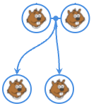
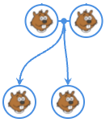

Enquête
Un Castor a volé des fruits !
Un détective a trouvé ses parents. Ils sont en bleu sur l'arbre généalogique.
L'enquête a permis de trouver ses grands parents. Ils sont en bleu sur l'arbre généalogique.
Les flèches montrent les enfants des couples de Castors.
L'enquête a montré que les personnes en bleu sur l'arbre généalogique ont un ancêtre en commun, qui est aussi un ancêtre de ce Castor.
On connaît aussi la taille du Castor.
Cliquez sur des Castors et retrouvez-le !
 
